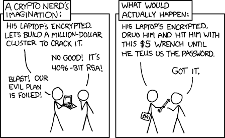

[Post title]
[A short teaser — the first two or three lines of the post.]
[The rest of the post goes here.]
[Add extra RAWR]
Thanks for visiting my Bitcoin hub, a place where I share the knowledge I've built during my time in the space, along with the resources that have helped me along the way.
I've built this site around the Bitcoin niches that interest me most. Here you'll find how I founded Women in Bitcoin Sydney and what we do there, research into physical attacks on cryptocurrency holders, and an interactive filtering tool built on top of Jameson Lopp's wrench attack database, with my own definition and coding framework drawn from my research.
Whether you're a researcher, a Bitcoiner, a sceptic or simply curious, I'm sure you'll find something of value here.
Money makes the world go round. Its how we signal our interest, our disagreements, and our values. When money is polluted by intermediaries, our ability to communicate our value heirarchies is skewed, resulting in a snowball effect whereby we are constantly having to adapt our behaviours and choices - not to any natural market - but to a market controlled by central powers who serve themselves before they serve any others.
This is a concept that breeds further nonesensical practices like that of Quanitiative Easing, coercive taxation, and a removal of genuine choice as it regards expenditure. While the rest of the world chooses to focus on which president they will next elect, I find my time is best spent on the question of "Which money is best for the prosperity of humanity?".
Time and time again, I land on Bitcoin as my answer.
I'm El — a Bitcoin educator and criminology student, based between Australia and Austria.
When I lived fulltime in Sydney, I founded Women in Bitcoin Sydney; a non-profit community organisation focused on repackaging the message of Bitcoin to women who weren't relating to the way it was commonly being communicated in male dominated spaces. At Women in Bitcoin Sydney I teach self-custody and financial sovereignty with an Australian lens, allowing us to focus on the current issues hitting us the hardest.
Now that I am abroad, I have pivoted towards using my background as a criminology student to investigate the increasing phenomena of physical attacks against crypto holders, known colloquially as "$5 Wrench Attacks". My research looks at the darker side of the space: physical coercion, and what it means for how we protect ourselves and the people we love.
A wrench attack is the use of physical force, or the threat of it, to make someone hand over their cryptocurrency or the keys that control it.
The name comes from a well-known xkcd comic: why spend millions trying to crack someone's encryption when a $5 wrench and a threat will get you the password? The strongest digital security in the world can be bypassed by going after the person who holds the keys.

Bitcoin is designed to be held directly, without a bank in the middle. That is its strength, and it is also why physical coercion works: there is often no institution to freeze a transfer, reverse it, or slow it down.
Attacks are no longer confined to the very wealthy or the very public. Data leaks, social media and visible lifestyles can all put ordinary holders, and the people around them, on an attacker's radar.
Most advice today falls into a few groups:
All of these approaches are integral to hardening your defences against a wrench attack, but a lot of mainstream, easily consumable media tends to focus on single catagories in their advice. I am a believer that it is a combination of all of the above that will be the most successful in reducing rates of attacks, which is why my content aims to strike that intersection.
A public database of known physical attacks on bitcoin holders, maintained by Jameson Lopp. Scroll and search inside the box, or open it full screen ↗.
ToolEvery 2026 case from Lopp's database, classified with my own definition and codebook. Filter by violence, planning, relationship, access method and more.
When Bitcoin Gets Physical.
In the modern era it is becoming increasingly common for attacks on crypto holders to move beyond the digital world.
An evolving threat landscape calls for an expansion of the way we understand our own place in this ecosystem. It is important to me that we don't settle on extremely technical self-custody setups as the only suggested response to wrench attacks, so I took it on myself to read and understand the research and translate it for you.
In this episode I investigate the types of people commiting physical attacks against crypto holders. We identify the difference between offender profiles and discuss the importance of understanding such differences in order to tailor methods to mitigate our risk of attack.
In September 2026, five lives were lost in a home invasion in Mexico that prosecutors say was aimed at a hardware wallet. Among the victims was a domestic worker who had no involvement in the family's finances. This video looks at that case as carefully as the reporting allows, and uses it to examine proxy targets: the partners, children, parents, and household staff who sit inside a holder's physical perimeter without any say in their custody decisions.
If you are open about your involvement in crypto publically, then you don't need a data leak to put you in the radar of potential attackers. Being public about your holdings has been identified by research as one of the greatest risk factors preceeding a wrench attack, this is especially aggravated if you are "flexing" your wealth too.
I've identified several recurring risk factors across documented cases — from public displays of wealth and poor operational security to occupation, location and online exposure.
Bitcoin has solved many of the technical problems surrounding money. Securing it, however, has always involved more than cryptography. In this series, I explore Bitcoin wrench attacks: the use of coercion, intimidation, kidnapping and violence to steal Bitcoin from individuals. Rather than focusing solely on wallets, multisig setups or hardware devices, I examine the human element through the lens of criminology, economics and history.
[A short teaser — the first two or three lines of the post.]
[The rest of the post goes here.]
[Add extra RAWR]
[A short teaser — the first two or three lines of the post.]
[The rest of the post goes here.]
Things I've built from my research. Click a tool to open it.
I have come to this particular definition, which may differ from others, as a way to be precise about the type of crime being committed, and to better understand what transpires: the offenders, the victims and the risks.
Any event in which a person is targeted with physical force, credible threat of physical force, real-world psychological coercion, or deception involving real-world presence — with intent to compel the transfer, disclosure, or surrender of cryptocurrency or cryptographic access credentials (private keys, seed phrases, PINs, or passwords).
A burglary where the victim is absent does NOT qualify — for properly stored Bitcoin, coercion of the holder is the only viable theft mechanism. This is what makes wrench attacks a categorically new crime type, not simply robbery adapted for a new asset class.
Last updated: 10 November 2026 · covers Lopp's database entries up to 31 October 2026
Each 2026 case from Lopp's database, classified against my codebook. Coding is based on the case summary and the source Lopp links; coverage often goes well beyond that single link. UNKNOWN means the reporting doesn't say. YET TO BE CLASSIFIED means the case hasn't been coded yet.
Please note, not all of the wrench attacks included in Lopp's database are considered as wrench attacks per my definition. This is a limitation of the research, where different sources score attacks using vastly different metrics.
Multiple codes are allowed for A and E. The violence meter shows the highest level reached. N/A means the field doesn't apply (for example, no crypto was taken).
[Map My Risk is in development. It will be usable here online, downloadable for offline use, and available as a printable version.]
These are the things that have helped me along the way. They might help you too. ✧
In this book Mr Lepard brings the reader on a journey through the modern history of money, preceeding and following the GFC in 2008. It's written in an easily digestible manner, and provides compelling arguments as to the ease by which fiat money can be manipulated. If you want to deepen your understanding of fiat money in practice this book is perfect for you.
ToolA list of known attacks against Bitcoin / crypto asset owning entities that occurred in meatspace. Created by Jameson Lopp, co-founder & Chief Security Officer of Casa. This gets updated regularly.
PodcastThis podcast was my true onboarding to Bitcoin. Mr Breedlove covers Bitcoin's intersection with every element in the world around us, intergrating philosophy, politics, and an understanding of natural law. The series that orangepilled me was "The Hillebrand Series" with Max Hillebrand.
This group is a womens-only Bitcoin meetup in Sydney, designed for absolute beginners who want to understand Bitcoin in a friendly, supportive space. It focuses on Bitcoin as a tool for financial empowerment, independence, and security, drawing on both practical knowledge and real-world examples.
Follow @WomenInBTCSyd on X ↗ Join on Meetup ↗A casual catch-up over lunch to discuss life, Bitcoin, and wherever else the conversation takes us…
Read more on Meetup ↗What are Michael Saylor and Strategy doing with Bitcoin? Corporate treasuries, STRK, leverage and the growing financialisation of BTC…
Read more on Meetup ↗This session focuses on how identity interacts with Bitcoin, and what that means in practice. We'll start with pseudoanonymity…
Read more on Meetup ↗What actually happens to money, markets, and personal freedom when the world becomes unstable…
Read more on Meetup ↗Women in Bitcoin Sydney joined the global Women of Bitcoin Summit to discuss how the next generation is carrying Bitcoin forward…
Read more on Meetup ↗Women in Bitcoin Sydney presents at the Central Coast Bitcoin meetup, sharing what we're doing and what we've learnt…
Read more on Meetup ↗Our first meet of 2026: discovering how Bitcoin complements political freedom and self-reliance…
Read more on Meetup ↗An open discussion about current events, plus my talk on how younger generations can use Bitcoin as a way out of inflation…
Read more on Meetup ↗Going back to the basics: what Bitcoin is and why it's important. Newbies and the simply curious are highly encouraged…
Read more on Meetup ↗Refreshing the basics, making small payments on the Lightning Network, then a game of Bitcoin Trivia…
Read more on Meetup ↗After the success of our first meetup: getting to understand what Bitcoin is and why it's important…
Read more on Meetup ↗Welcome curious women of Sydney! Our very first meetup, with seats limited to ten…
Read more on Meetup ↗Speaking, collaborations, interviews, or just a hello — reach out.